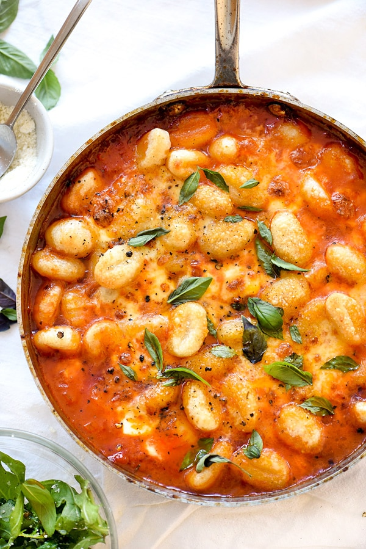

How to Make Homemade Gnocchi

Preperation Time: 90 Mins
Cooking Time: 5 Mins
Tools
Fork
Pot
Water
Water strainer or something to remove items from boiling water
Ricer
Potato peeler
Knife
Stove
Bowl
Ingredients List:
- 3 cups potatoes
- 1 cup flower
- 1 egg
Steps in Stage 1:
- Add water to pot and bring to a boil
- Peel your potatoes while the water is boiling and rinse them off
- Add potatoes to water. Let sit until cooked. You will know they are cooked when your knife can easily glide into the potatoes with resistance
- Remove potatoes from water, drain water from pot.
- Use ricer to crush potatoes into your bowl. Let the potatoes sit until they have cooled off to room temperature. This may take hours
Steps in Stage 2:
- Put potatoes on counter in a small mountain
- Sprinkle flower around potatoes until all of it used
- Create a small crater in the top of the mountain of potatoes. Crack your egg and pour your egg into the crater. Beat egg.
- From the outside inwards, start to mix your flour onto your potatoes
- Mix until potatoes turn into a dough-like ball
- Let sit for a minute
- Cut off pieces from the dough ball. Roll these pieces out into long, thin strips. Cut these strips in 1 inch pieces
- Boil water
- Add pieces of gnocchi to water
- Remove when cooked. You will know they are cooked because they will float to the top
- Serve with the sauce of your choice!
Return to Index